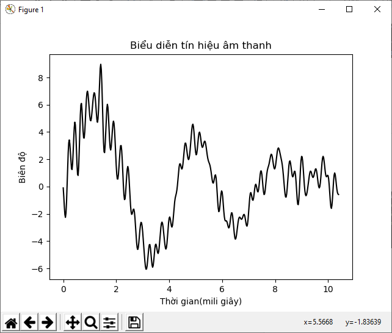
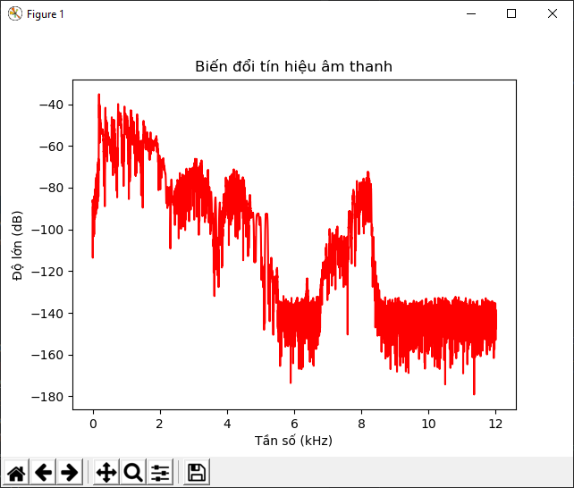
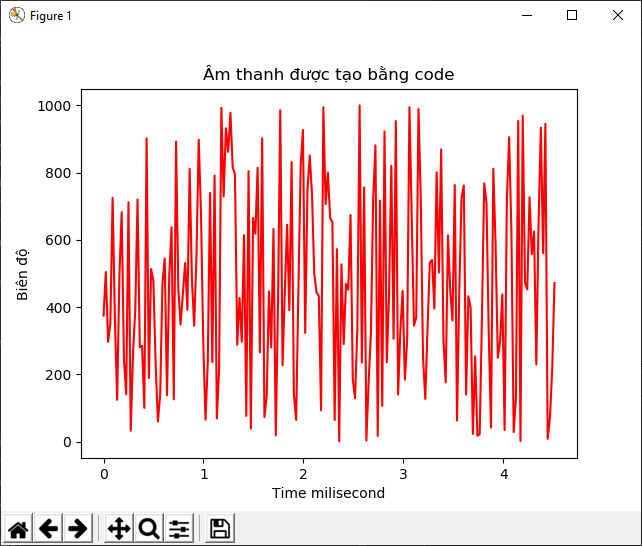
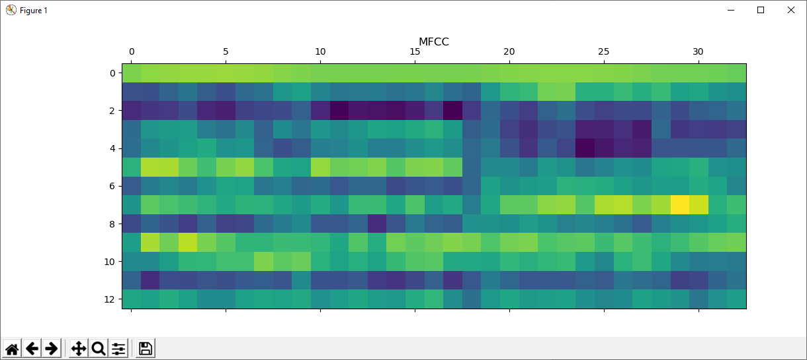
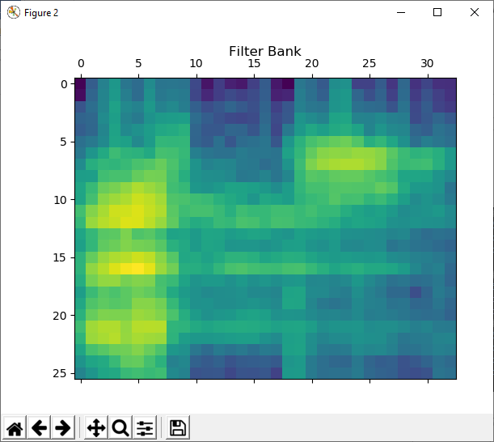

12
Xây dựng hệ thống nhận dạng giọng nói(Speech Recognizer)
Trong chương này chúng ta sẽ học về nhận dạng giọng nói. Chúng ta sẽ thảo luận làm thế nào để làm việc cùng với những tín hiệu giọng nói và hiểu cách làm sao để biểu diễn những song âm này. Bằng cách tận dụng những kỹ thuật khác nhau để xử lý tín hiệu giọng nói, Chúng ta sẽ học cách làm sao để xây dựng một hệ thống nhận dạng giọng nói.
Các phần bạn sẽ học trong phần này:
Xử lý các tín hiệu giọng nói
Nhận dạng giọng nói là quá trình xử lý để có thể hiểu được những từ được nói bởi con người. Những tín hiệu giọng nói được lấy bằng cách sử dụng mic và hệ thống cố gắng hiểu được những từ đã nhận. Nhận dạng giọng nói được sử dụng rộng rãi trong những lĩnh vực tương tác giữa người và máy, smartphones, dịch, hệ thống sinh trắc, bảo mật …..
Điều quan trọng là chúng ta phải hiểu bản chất của tín hiệu ngôn ngữ trước khi chúng ta phân tích chúng. Những tín hiệu nhận được là hỗn hợp phức tạp của các tín hiệu khác nhau. Có rất nhiều âm vực của tín hiệu lời nói nên làm nó càng thêm phức tạp. Những thứ đó có thể hiểu là tâm trạng của người nói, ngữ điệu, ngôn ngữ, tiếng ồn ….
Vì thế việc xác định một bộ quy tắc để phân tích những tín hiệu lời nó là khá khó khan. Nhưng con người có thể hiểu được điều đó một cách tự nhiên. Chúng ta dường như làm điều đó một cách rất dễ dàng. Nếu chúng ta muốn những cố máy làm những việc tương tự như thế chúng ta cần phải giúp chúng hiểu được lời nói như chúng ta đã làm.
Nghiên cứu từ vụng trên những khía cạnh khác nhau và ứng dụng của giọng nói, giống như là hiểu những từ được đánh vần, nhận dạng ai là người nói, nhận dạng tâm trạng, xác định dấu câu ( hay ngữ điệu của câu)… Trong chương này chúng ta sẽ chỉ tập trung vào cách hiểu nhận dạng những từ được nói ra. Nhận dạng giọng nói là một bước quan trọng trong lĩnh vực tương tác giữa máy tính và con người, chúng cần nói cho chúng ta bằng ngôn ngữ tự nhiên. Đây là lý do tự động nhận diện giọng nói là trung tâm chú ý cho nhiều lĩnh vực nghiên cứu trong những năm vừa qua.
Biểu diễn tín hiệu âm thanh
Trước tiên chúng ta hãy học cách biểu diễn một tín hiệu audio. Chúng ta sẽ học về cách đọc một tín hiệu audio từ 1 file và làm việc cùng với nó. Việc này sẽ giúp chúng ta hiểu cấu trúc của 1 tín hiệu audio. Khi chúng ta ghi lại âm thanh từ microphone, chúng ta đang lấy các mẫu tín hiệu âm thanh và số hóa chúng. Các tín hiệu âm thanh được biểu diễn theo dạng sóng và có giá trị liên tục, và chúng ta không thể lưu trữ chúng như thế được. Chúng ta cần lấy mẫu tín hiệu tần số và chuyển đổi nó thành dạng số rời rạc.
Thông dụng nhất, tín hiệu lời nói được lấy mẫu ở tần số 44,100Hz. Nó có nghĩa là mỗi giây tín hiệu tiếng nói được chia thành 44.100 phần và giá trị tại mỗi điểm thời gian này được lưu trữ ở file đầu ra. Chúng ta lưu giá trị của tín hiệu âm thanh sau 1/44,100 giây. Trong phần này chúng ta lấy mẫu tín hiệu của âm thanh là 44,100Hz. Bằng cách chọn tần số mãu cao, nó sẽ xuất hiện như tín hiệu âm thanh liên tục khi con người nghe nó. GIờ thì tử biểu diễn một tín hiệu âm thanh.
import numpy as np
import matplotlib.pyplot as plt
from scipy.io import wavfile
# đọc file audio đã tạo sẵn. bạn có thể dùng window recoder hoặc recoder của điện thoại để lưu file dưới dạng wave
# Sử dụng hàm wavefile.read. Nó sẽ trả về 2 giá trị.
# sampling frequency - tần số lấy mẫu
# audio signal- tín hiệu âm thanh
sampling_freq,signal=wavfile.read("../data/chap12/abc.wav")
# In ra terminal dạng của tín hiệu, định dạng dữ liệu, và thời gian của tín hiệu âm thanh
print("Dạng tín hiệu: ",signal.shape)
print("Định dạng dữ liệu (datatype): ",signal.dtype)
print("Thời gian của tín hiệu âm thanh: ",round(signal.shape[0]/float(sampling_freq),2)," giây")
# Đơn giản lại tín hiệu âm thanh
signal=signal/np.power(3,5)
# Tách lấy khoảng 500 giá trị từ tín hiệu âm thanh để biểu diễn đồ thị (tại vì tín hiệu âm thanh của mình đoạn đầu là không có nên tín hiệu sẽ thẳng ----- nên mình sẽ lấy từ giây thứ 0.1 :
signal=signal[24500:25000]
# Xây dựng cột thời gian
time_axis=1000*np.arange(0,len(signal),1)/float(sampling_freq)
# Biểu diễn tín hiệu âm thanh
plt.plot(time_axis,signal,color='black')
plt.xlabel('Thời gian(mili giây)')
plt.ylabel('Biên độ')
plt.title('Biểu diễn tín hiệu âm thanh')
plt.show()
Kết quả vẽ đồ thị

Kết quả đồ thị này ở mỗi file âm thanh hay đoạn thời gian khác nhau sẽ có hình dạng khác nhau
kết quả ở Terminal :
Dạng tín hiệu: (196608,)
Định dạng dữ liệu (datatype): int16
Thời gian của tín hiệu âm thanh: 4.1 giây
Vì mình sử dụng file có tần số lấy mẫu là (48,000Hz) nên dạng tín hiệu( Signal Type) là 196608
Chuyển đổi tín hiệu âm thanh thành tần số liên tục
Trong quá trình tìm hiểu và phân tích tín hiệu ân thanh chúng ta cần phải hiểu những điều cơ bản về tần số. Nó sẽ giúp chúng ta hiểu rõ hơn làm cách nào để tách những thông tin có ích từ tín hiệu âm thanh. Tín hiệu âm thanh bao gồm một hỗn hợp các sóng hình sin có nhiều tần số, pha, biên độ khác nhau .
Nếu chúng ta khảo sát về các thành phần của tần số, Chúng ta có thể nhận ra được rất nhiều nét đặc trưng riêng. Mỗi tín hiệu âm thanh đều có nét đặc trưng riêng bởi sự phân bổ của nó trong 1 dải tần số. Để chuyển đổi tín hiệu dải thời gian thành một dải tần số, chúng ta cần sử dụng những phép toán going như Fourier Transform. Nếu bạn cần tìm hiểu thêm về Fourier Transform http://www.thefouriertransform.com/ .
Let's code:
import numpy as np
import matplotlib.pyplot as plt
from scipy.io import wavfile
# Tải file phát âm từ apple hoặc bạn có thể dùng file tao.wav bằng tiếng việt
sampling_freq,signal=wavfile.read('../data/chap12/tao.wav')
# Normalize tín hiệu âm
signal=signal/np.power(2,15)
# Lấy độ dài của signal và chia nửa lấy 1/2
len_signal=len(signal)
len_half=np.ceil((len_signal+1)/2.0).astype(np.int)
# áp dụng biến đổi Fourier Transform
freq_signal=np.fft.fft(signal)
# Giảm tần số tín hiệu và lấy bình phương của nó
freq_signal=abs(freq_signal[0:len_half])/len_signal
freq_signal**=2
# chia tín hiệu biến đổi thành chẵn và lẻ
len_fts=len(freq_signal)
if len_signal%2:
freq_signal[1:len_fts]*=2
else:
freq_signal[1:len_fts-1]*=2
# tính độ lớn của tín hiệu đo bằng dB (decibel)
signal_power=10*np.log10(freq_signal)
# Tạo trục x đây là trục tần số được đo bằng kHz (kilog hertz):
x_axis=np.arange(0,len_half,1)*(sampling_freq/len_signal)/1000.0
# Vẽ đồ thị
plt.figure()
plt.plot(x_axis,signal_power,color='red')
plt.title('Biến đổi tín hiệu âm thanh')
plt.xlabel('Tần số (kHz)')
plt.ylabel('Độ lớn (dB)')
plt.show()
Kết quả thu được:

Tạo tín hiệu âm thanh
Giờ chúng ta đã biết cách tín hiệu âm thanh làm việc thế nào, giờ thì hãy xem làm cách nào để chúng ta tạo ra một đoạn tín hiệu ?:o? Chúng ta có thể sử dụng NumPy để tạo ra một vài tín hiệu âm thanh. Khi đã biết âm thanh là một hỗn hợp hình sin, chúng ta có thể dựa vào đó để tạo ra một tín hiệu âm thanh dựa vào một vài tham số.
import numpy as np
import matplotlib.pyplot as plt
from scipy.io.wavfile import write
# Định nghĩa tên cho file đầu ra
output_file='generated_audio.wav'
# Xác định một vài tham số như độ dài, tần số mẫu, tần số cao độ, giá trị thấp nhất và giá trị cao nhất
duration=4 # Đây là tính giây
sampling_freq=44100# Tính theo Hz
tone_freq=784
min_val=-4*np.pi
max_val=4*np.pi
#Tạo tín hiệu âm thanh sử dụng những tham số trên
t=np.linspace(min_val,max_val,duration*sampling_freq)
signal=np.sin(2*np.pi*tone_freq*t)
# Tạo thêm độ nhiễu cho âm thanh (lên xuoogns 1 tẹo)
noise=1001.1*np.random.rand(duration*sampling_freq)
signal+=noise
# Giảm cường độ âm thanh và kéo dãn tín hiệu
scaling_factor=np.power(2,15)-1
signal_normalize=signal/np.max(np.abs(signal))
signal_scaled=np.int16(signal_normalize*scaling_factor)
# Ghi tín hiệu âm thanh thành file
write(output_file,sampling_freq,signal_scaled)
# vẽ tín hiệu âm thanh thành biểu đồ
# Chỉ lấy 200 giá trị đầu tiên để biểu diễn cho đẹp
signal=signal[:200]
time_axis=1000*np.arange(0,len(signal),1)/float(sampling_freq) #Trục X
plt.figure()
plt.plot(time_axis,signal,color='red')
plt.xlabel('Time milisecond')
plt.ylabel('Biên độ')
plt.title('Âm thanh được tạo bằng code')
plt.show()
Kết quả:

Tổng hợp âm để tạo nhạc
Ở phần trước chúng ta đã biết cách tạo ra âm thanh, nhưng nó là âm thanh mono chỉ có 1 cao độ duy nhất và điều đó không có ích. đó là do chỉ có một tần số duy nhất suốt toàn bộ tín hiệu. Giờ thì ta vẫn sử dụng nguyên tắc đó nhưng tổng hợp lại bằng cách ghép các tone (cao độ âm thanh) khác nhau dể tạo ra âm nhạc. Chúng ta sẽ sử dụng các tone thông thường như ( tone La (A), Đô(C),Sol(G),Fa(F)… để tạo ra nhạc. Để biết thêm về các tần số áp dụng cho các âm thanh trên bạn nên xem thêm ở đây : https://pages.mtu.edu/~suits/notefreqs.html
import json
import numpy as np
import matplotlib.pyplot as plt
from scipy.io.wavfile import write
# Tạo một hàm để tạo ra một tone (cao độ node âm thanh) dựa trên những tham số như tần số, thời gian, biên độ, tần số hz
def tone_synthesizer(freq,duration,amplitude=1.0,sampling_freq=44100):
time_axis=np.linspace(0,duration,int(duration*sampling_freq))
# Xây dựng cấu trúc tín hiệu âm thanh sử dụng những tham số được chỉ định và trả về giá trị dưới dạng npint16
signal=amplitude*np.sin(2*np.pi*freq*time_axis)
return signal.astype(np.int16)
if __name__=="__main__":
file_tone_single='fa.wav'#input("Tên file muốn lưu")
file_tone_sequence='generated_tone_sequence.wav'
# Chúng ta sử dụng file chứa tone map chứa tên nốt (tone node - La Si Do) để tạo tần số âm thanh
mapping_file='../data/chap12/tone_mapping.json'
# Tải file vào lấy tonemap từ file
with open(mapping_file,'r') as f:
tone_map=json.loads(f.read())
#Tạo nốt Fa (F) trong 3 giây:
tone_name='D'
duration=0.5
amplitude=12000
sampling_freq=44100
# lấy tần số tương ứng từ map
tone_freq=tone_map[tone_name]
# Tạo tone sử dụng hàm tổng hợp đã tạo bên trên
synthesized_tone=tone_synthesizer(tone_freq,duration,amplitude,sampling_freq)
write(file_tone_single,sampling_freq,synthesized_tone)
# Thử tạo một chuỗi nốt nhạc để làm cho âm thanh hay hơn.
#Tạo chuỗi nốt âm thanh với thời gian tương ứng
tone_squence=[('G',0.4),('G',0.4),('G',0.4),('C',0.6),('G',0.4),('G',0.4),('G',0.4),('G',0.4),('C',0.8),('D',0.4)]
# Xây dựng âm thanh dựa trên chuỗi nốt âm thanh
signal=np.array([])
for item in tone_squence:
tone_name=item[0]
freq=tone_map[tone_name]
duration=item[1]
print(freq, duration, amplitude, sampling_freq)
synthesized_tone=tone_synthesizer(freq,duration,amplitude,sampling_freq)
signal=np.append(signal,synthesized_tone)
write(file_tone_sequence,sampling_freq,signal.astype(np.int16))
#
signal=signal[2000:5000]
plt.figure()
time_axis = 1000 * np.arange(0, len(signal), 1) / float(sampling_freq) # Trục X
plt.plot(time_axis,signal)
plt.show()
Trích xuất các tính năng giọng nói
Chúng ta đã học cách chuyển từ tín hiệu thời gian thành tần số. Tính năng tần số được dùng rộng rãi trong tất cả các hệ thống nhận dạng giọng nói. Những khái niệm chúng ta đã thảo luận trước đây đã một phần giới thiệu về ý tưởng này, nhưng trên thực tế tính tần số (frequency) có một chút phức tạp hơn. Mỗi lần chúng ta chuyển đồi từ tín hiệu thành tần số, chúng ta cần chắc chắn chúng sử dụng được dưới dạng một vector tính năng. Đây là lúc chúng ta cần biết thêm về khái niệm Mel Frequency Cepstral Coefficients(MFCCs). MFCC là một tiện ích được sử dụng để phân tích tần số từ một tín hiệu âm thanh.
Để phân tách một tần số từ một tín hiệu âm thanh, MFCC đầu tiên sẽ tách độ lớn của dải âm thanh. Nó sẽ dùng những bộ lọc và một biến đổi cos rời rạc (discrete cosine transform-DCT) để phân tách những vector tính năng tần số. Nếu bạn cảm thấy muốn đọc thêm về MFCC bạn có thể xem trên link sau: http://practicalcryptography.com/miscellaneous/machine-learning/guide-mel-frequency-cepstral-coefficients-mfccs/
Chúng ta sẽ sử dụng một package gọi là python_speech_features để phân tách MFCC. package này có thể download tại đây : https://python-speech-features.readthedocs.io/en/latest/
import numpy as np
import matplotlib.pyplot as plt
from scipy.io import wavfile
from features import mfcc,logfbank
# Load wave file
sampling_freq,signal=wavfile.read('../data/chap12/apple01.wav')
# Lấy 10,000 mẫu đầu tiên trong signal để phân tích
signal=signal[:10000]
# dùng hàm mfcc để phân tích MFCC
features_mfcc=mfcc(signal,sampling_freq)
# In tham số MFCC ra terminal:
print('MFCC:\nSố lượng ô =',features_mfcc.shape[0])
print('Độ lớn của mỗi features =',features_mfcc.shape[1])
#Vẽ các tính năng (features) MFCC
features_mfcc=features_mfcc.T
plt.matshow(features_mfcc)
plt.title('MFCC')
#Phân tách các bộ lọc
features_fb=logfbank(signal,sampling_freq)
print('Bộ lọc:\nSố lượng ô: =',features_fb.shape[0])
print('Độ lớn của mỗi features =',features_fb.shape[1])
#Vẽ lên biểu đồ
features_fb=features_fb.T
plt.matshow(features_fb)
plt.title('Filter Bank')
plt.show()


Terminal:
MFCC:
Số lượng ô = 33
Độ lớn của mỗi features = 13
Bộ lọc:
Số lượng ô: = 33
Độ lớn của mỗi features = 26
Nhận dạng từ trong tín hiệu âm thanh
Giờ thì chúng ta đã học hầu hết các kỹ thuật để phân tích tín hiệu âm thanh, giờ thì hãy đối đầu với việc chúng ta phải nhận dạng được những từ được nói ở trong đó. Hệ thống nhận dạng giọng nói lấy tín hiệu âm thanh như là tín hiệu đầu vào và nhận dạng từ được nói ở tín hiệu đầu ra. Chúng ta sẽ dùng mô hình Hidden Markov (HMMs) để làm nhiệm vụ này.
Như chúng ta đã thảo luận ở chương trước, HMMs là mô hình rất tốt để phân tích dữ liệu có tần suất liên tục. Một tín hiệu âm thanh là một tín hiệu liên tục, nó cũng được hiểu là một dữ liệu chuỗi ( dữ liệu tần suất liên tục theo thời gian). Giả định các đàu ra được tạo ra bởi hệ thống trải qua một loạt các trạng thái ẩn (hidden states). Nhiệm vụ của chúng ta là tìm ra những trạng thái ân này và định dạng những từ xuất hiện trong tín hiệu âm thanh. Nếu bạn muốn đào sâu thêm hãy tìm hiểu ở đây : https://hmmlearn.readthedocs.io/en/latest/
Chúng ta đã sử dụng hmmlearn ở chương trước nên bạn không cần phải cài nhưng nếu bạn nhảy từ đâu đó vào chương này thì hãy xem lại cách cài đặt.
Để train hệ thống nhận dạng giọng nói, chúng ta cần một bộ dữ liệu âm thanh cho mỗi từ. bạn có thể sử dụng bộ dữ liệu âm thanh của hmmlearn tại đây : https://code.google.com/archive/p/hmm-speech-recognition/downloads
Bộ dữ liệu này gồm 7 từ khác nhau. mỗi từ này được chia vào các folder riêng biệt và mỗi folder này chứa 15 file âm thanh để đọc từ đó một cách khác nhau. Chúng ta sẽ sử dụng 14 file để train và 1 file để test trong mỗi folder. Chú ý, ở đây là một một bộ dữ liệu rất nhỏ, trong thực tế bạn sẽ phải sử dụng một bộ thư viện khổng lồ để có thể xây dựng một hệ thống nhận dạng giọng nói. Chúng ta sẽ sử dụng bộ dữ liệu này để tạo ra một hệ thống nhận dạng giọng nói cơ bản với những từ được tạo.
Trước tiên chúng ta sẽ xây dựng một mô hình HMM cho mỗi từ. Chúng ta sẽ lưu những mô hình này để làm tài liệu tham khảo. Khi chúng ta muốn nhận dạng một từ không biết trong một file âm thanh, chúng ta sẽ cho nó chạy thử qua tất cả các mô hình và chọn mô hình cho điểm số cao nhất. Giờ thì bắt tay vào code nào:
import os
import argparse
import warnings
import numpy as np
from scipy.io import wavfile
from hmmlearn import hmm
from features import mfcc
# Tạo class để train sử dụng HMM:
class ModelHMM(object):
def __init__(self,num_components=4,num_iter=1000):
self.n_iter=num_iter
self.n_components=num_components
self.cov_type='diag'
self.model_names='GaussianHMM'
# Tạo biến làm nơi chúng ta sẽ lưu những model của từng từ
self.models=[]
self.model=hmm.GaussianHMM(n_components=self.n_components,covariance_type=self.cov_type,n_iter=self.n_iter)
#Tạo hàm để train model
def train(self,training_data):
np.seterr(all='ignore')
cur_model=self.model.fit(training_data)
self.models.append(cur_model)
#Tạo một hàm để tính toán điểm số cho dữ liệu đầu vào:
def compute_score(self,input_data):
return self.model.score(input_data)
#Tạo một hàm để xây dựng một model cho mỗi từ trong dữ liệu training
def build_models(input_folder):
speech_models=[]
# phân tích dữ liệu thư mục input:
for dir_name in os.listdir(input_folder):
#Lấy tên của sub foler
subfolder=os.path.join(input_folder,dir_name)
if not os.path.isdir(subfolder):
continue
# Lấy nhãn
label=subfolder[subfolder.rfind('\\')+1:]
# Tạo biến X để lưu dữ liệu train
X=np.array([])
# Tạo list file sử dụng để train
training_files=[x for x in os.listdir(subfolder) if x.endswith('.wav')][:-1]
# Tạo vòng lặp tới khi train xong và xây dựng được models
for mfilename in training_files:
file_path=os.path.join(subfolder,mfilename)
# Lấy tín hiệu (signal) âm thanh từ file hiện tại
sampling_freq,signal=wavfile.read(file_path)
# Tách các MFCC features
#print(len(signal),sampling_freq)
with warnings.catch_warnings():
warnings.simplefilter('ignore')
features_mfcc = mfcc(signal, sampling_freq)
if len(X)==0:
X=features_mfcc
else:
X=np.append(X,features_mfcc,axis=0)
model=ModelHMM()
model.train(X)
speech_models.append((model,label))
model=None
return speech_models
# Tạo hàm để chạy thử nghiệm treen dữ liệu test:
def run_test(tes_files):
# Phân loại dữu liệu input
for test_file in tes_files:
sampling_freq,signal=wavfile.read(test_file)
with warnings.catch_warnings():
warnings.simplefilter('ignore')
feature_mfcc=mfcc(signal,sampling_freq)
#Tạo số điểm max_score ở mức âm vô cùng và nhãn dự đoán
max_score=-float('inf')
predicted_label=None
for item in speech_models:
model,label=item
score=model.compute_score(feature_mfcc)
if score>max_score:
# Chọn điểm tại mức điểm lớn nhất hiện tại trong số tất cả model
max_score=score
predicted_label=label
start_index=test_file.find('\\')+1
end_index=test_file.rfind('\\')
#print(test_files)
original_label=test_file[start_index:end_index]
print('Tên gốc:',original_label)
print('Tên dự đoán: ',predicted_label)
#Tạo hàm main
if __name__=='__main__':
input_folder=input('datafolder')
speech_models=build_models(input_folder)
# Chúng ta đã để lại 1 file để test trong mỗi folder. giờ thì ta sử dụng file đó để tính độ chính xác của model
test_files=[]
for root,dirs,files in os.walk(input_folder):
for filename in(x for x in files if '15' in x):
filepath=os.path.join(root,filename)
test_files.append(filepath)
run_test(test_files)
Kết quả đầu ra:
datafolder../data/chap12/speech_audio
Tên gốc: apple
Tên dự đoán: apple
Tên gốc: banana
Tên dự đoán: banana
Tên gốc: kiwi
Tên dự đoán: kiwi
Tên gốc: lime
Tên dự đoán: lime
Tên gốc: orange
Tên dự đoán: orange
Tên gốc: peach
Tên dự đoán: peach
Tên gốc: pineapple
Tên dự đoán: pineapple
Như bạn đã thấy mô hình dự đoán khá chính xác.
Tổng kết
Vậy là chúng ta kết thúc chương 12 về nhận dạng giọng nói. Điểm cần chú ý trong chương này là xử lý tín hiệu âm thanh , tổng hợp âm thanh và sử dụng mô hình MFFC để train một hệ thống tự động nhận dạng giọng nói cơ bản.
Trong chương tiếp theo chúng t aasex học về nhận diện vật thể và theo dõi nó.